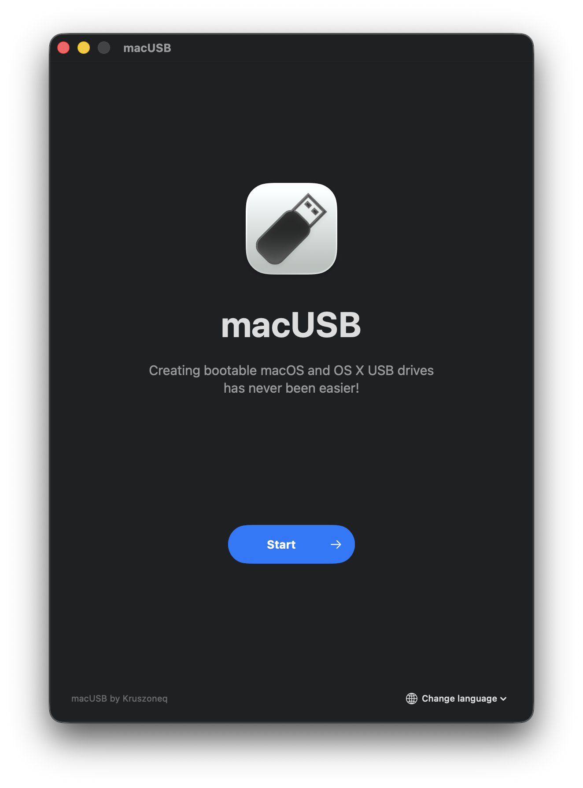
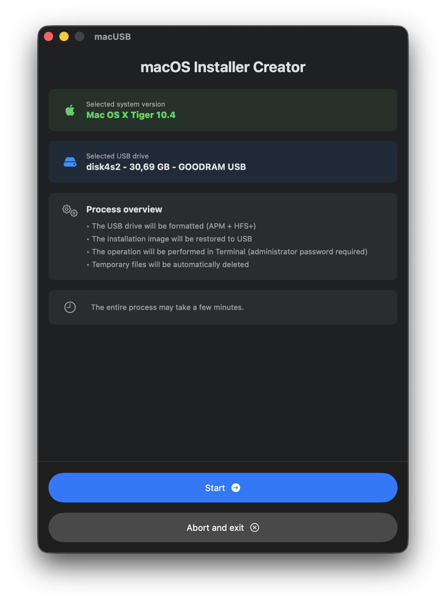
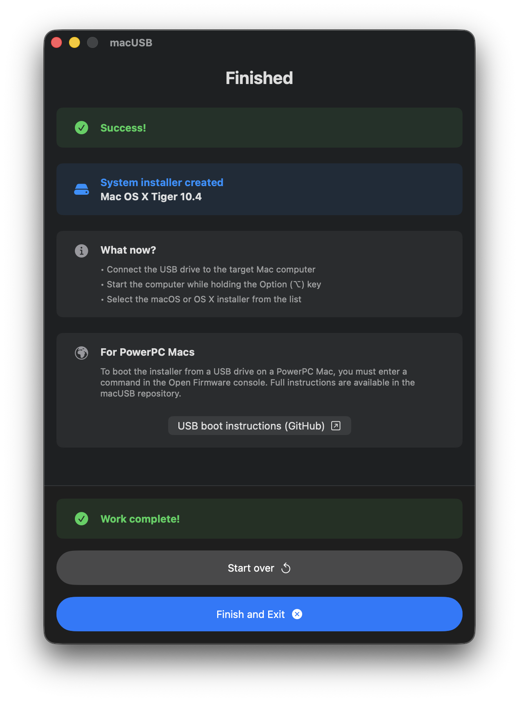
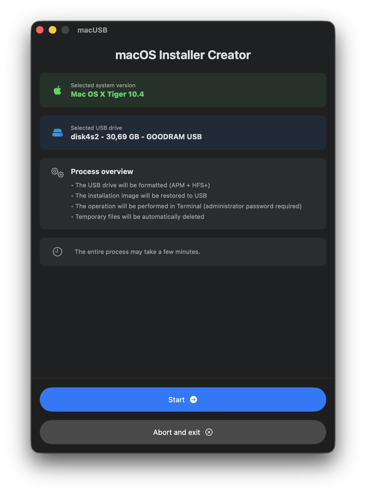
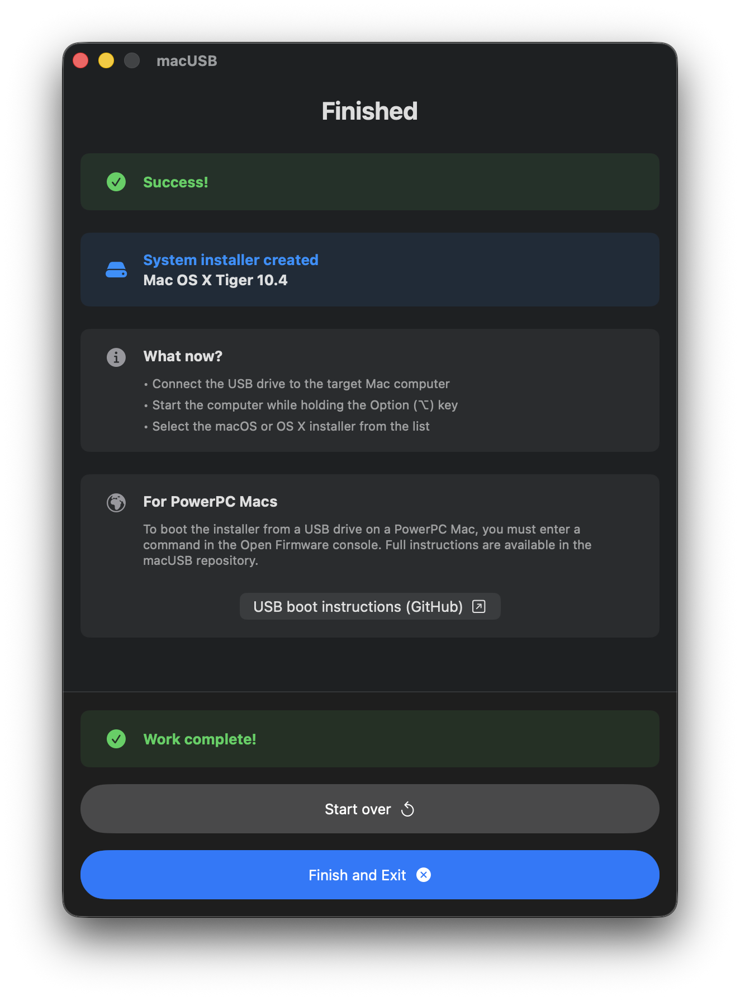
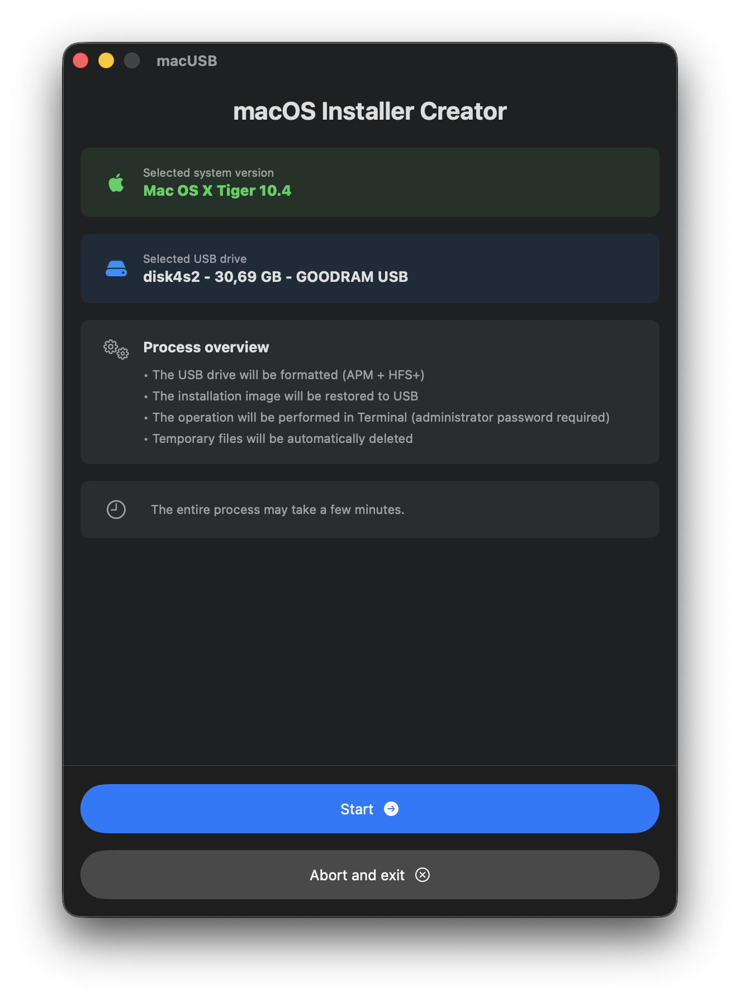
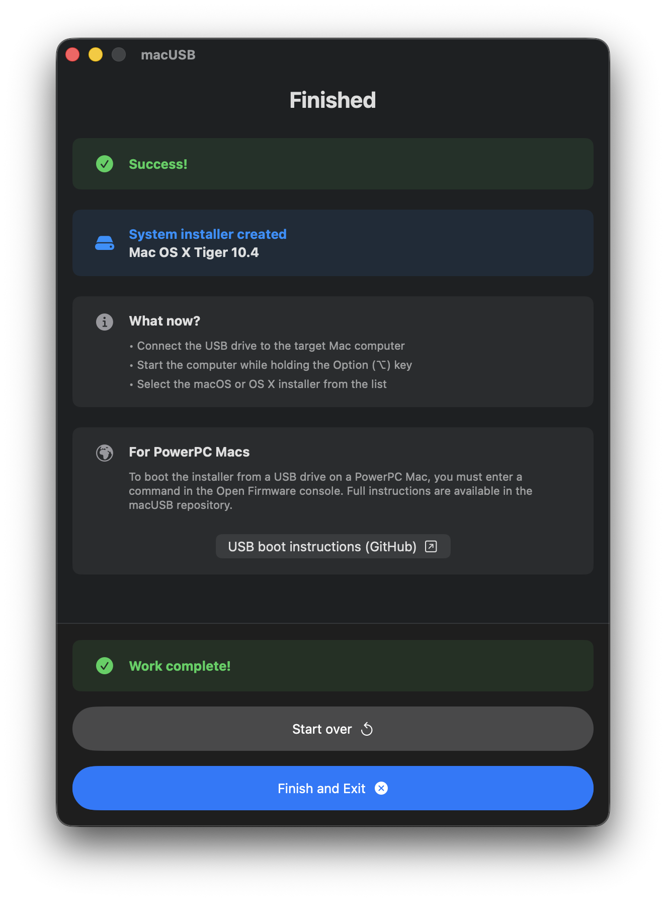
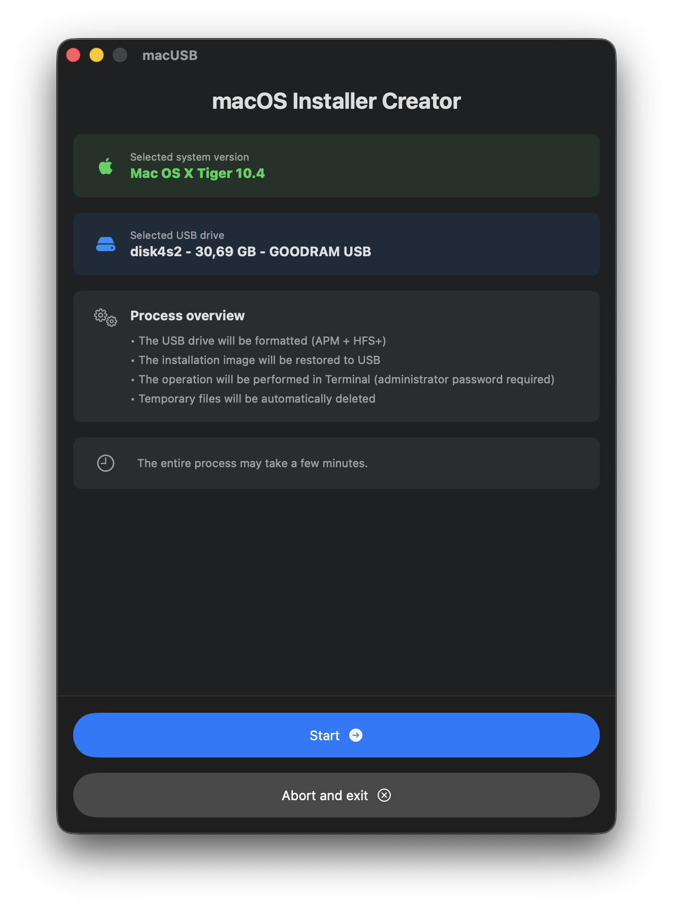
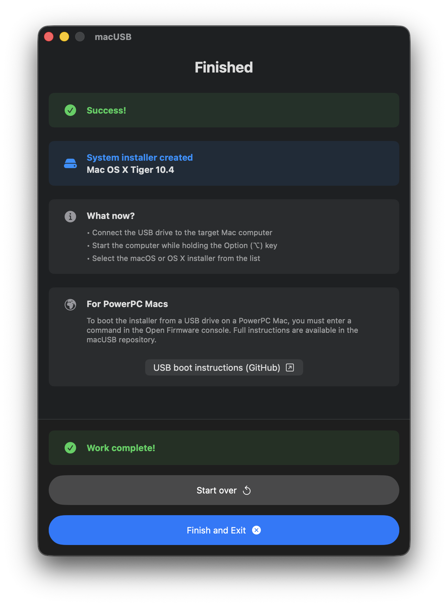

 





macUSB
Creating bootable macOS and OS X USB drives has never been easier!


Creating bootable macOS and OS X USB drives has never been easier!
macUSB is a one-click tool that transforms your modern Mac with Apple Silicon into a service machine capable of reviving older Apple computers.
Application lets you create bootable USB installers for macOS and Mac OS X - from version 10.4 Tiger up to the latest releases.
Just a few clicks. Select an installer file, choose your drive, and you’re done.
Easily create installers for older OS X versions to revive your hardware.
Full code transparency. Safe, free, and no hidden features.
macUSB automatically identifies the macOS installer version and selects the optimal creation method. It precisely tailors the process to the system architecture, accounting for the procedural differences between Intel and PowerPC-based Macs.
Before initiating the process, macUSB presents a summary of the detected system, the target USB drive, and the planned technical steps. The creation is executed directly via Terminal using native system utilities, ensuring maximum reliability and full transparency of the operation.
Once the bootable drive is ready, macUSB provides the essential guidance needed to start the installer. Users of Intel-based Macs receive verified boot instructions, while for PowerPC architecture, the app provides a direct link to dedicated documentation on the project’s website.